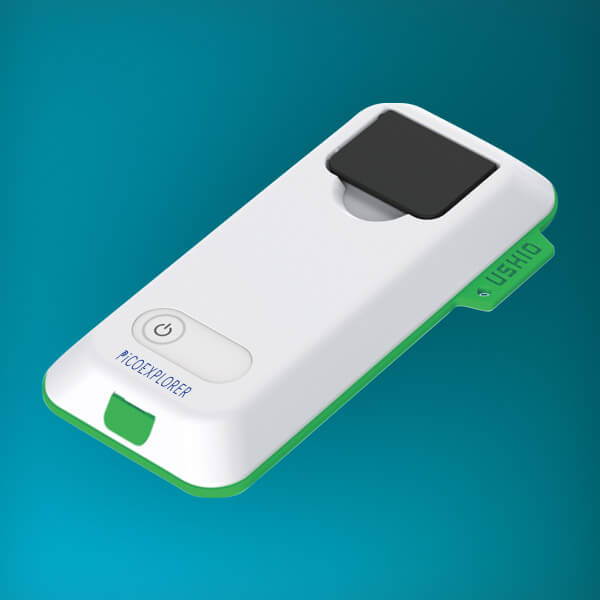
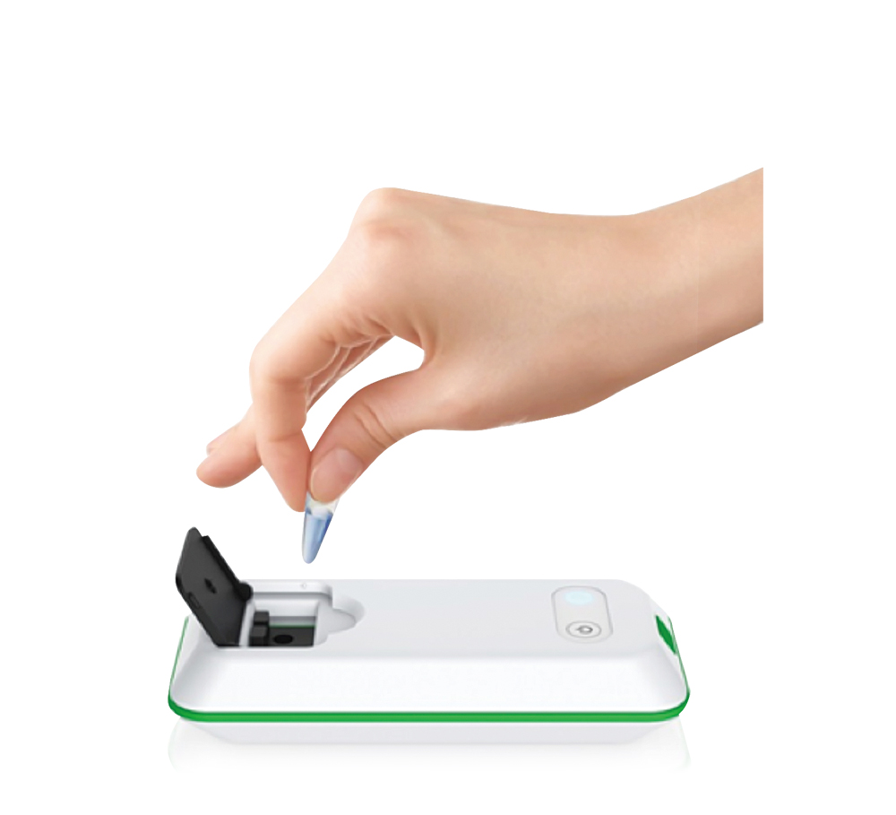

Projects
Pico Explorer (Ushio America)



The PiCOEXPLORER™ is a hand-held photometer suitable for quantitative colorimetric or optical density measurements. The device is controlled through wireless communication to a tablet, smartphone or desktop computer. The software application allows for rapid quantitative measurement of colorimetric assays including assays for protein, nucleic acid, heavy metals, organic molecules, and carbohydrates. Measurements are done using a micro- or PCR-tube and can be saved in the application and/or uploaded to a computer. Therefore, the PiCOEXPLORER can greatly reduce both the time and the labor required for measurements compared to a traditional photometer device.